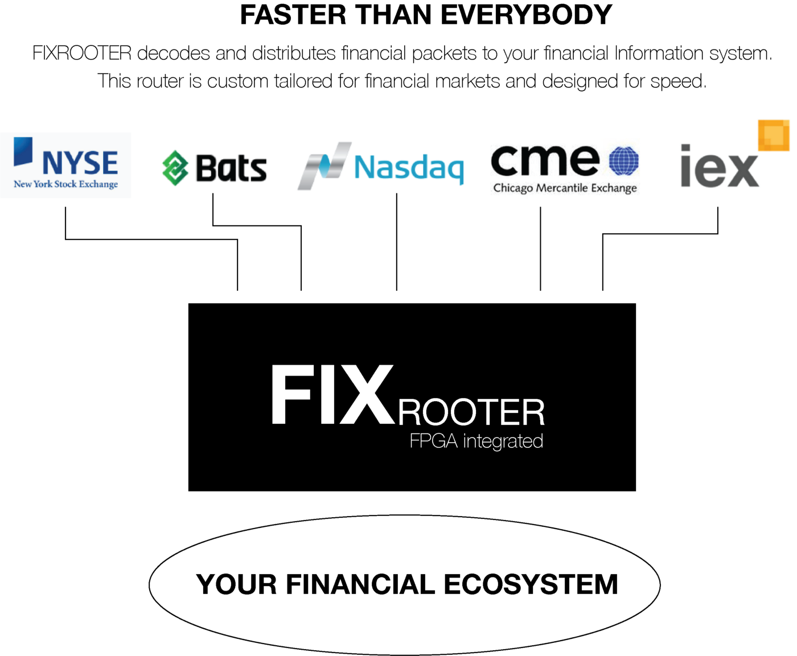

Programmable switches in financial markets
The opportunity of networks in chips for financial infrastructure operators

Many sectors like high-frequency trading have not waited for the network hardware to be programmable in order to build software that is responsible for handling networks packets given the needs of the business logic, here the need of the trading algorithms. This required putting specialized and customized servers right after the routers and switches or modifying the firmware of the network components for powerful financial actors that have tailored relationships with network component manufacturers. But now with the revolution of programmable switches led by startups like barefoot, there is no need of building customs servers for rooting and processing exchange packets nor having privileged relationships with network hardware manufacturers for implementing packet rooting according to a domain-specific protocol and needs like exchanging and processing financial data because network hardware are now protocol independent and programmable.
This revolution of Network in chip and programmable switches promises many applications and solutions to problems like network congestion for hyper-scale cloud providers like Microsoft Azure, modularization, and dynamic routing for data-intensive systems stock exchange matching engines, and reduction of latency for financial actors like high-frequency trading firms and market-making operators. This article is about showing simple examples of how programmable switches could be used in financial markets like for engineering custom order routing switches like this one I was highlighting two years ago in my article entitled built for speed and FIX.

In financial markets, market data are produced in huge volume and shared with market participants like high-frequency trading shops and market-making firms that use them to feed their algorithmic trading and market-making systems. these data sent by exchange have their own specification and use a given protocol (often fix protocol) that defines the meaning of each header included in the network packet. Based on this specification of the structure of each king of market data network packets, market-making firms and hft shops develop parsers that process these packets in order to identify them and tunnel them to the corresponding system that has to process them and react on them given their payloads. This tasks of parsing and processing market data network packet used to be performed by servers positioned after the routers and switches but now with the revolution of programmable switches this task could be done right into the switch and market-making firms and hft actors could gain other microseconds that could be worth millions of dollars because let’s recall that in financial market a microsecond of latency saved is an opportunity to make thousands of trading orders that could be profitable.
These many applications the programmable switches bring to financial market actors, the simplest one being to be able to route packets based on the stock, the instrument, this packet is about because this information is here available as a header of the network packet. For example, we could program a switch to route all incoming packets about Microsoft stock to a defined server. I hope that you could see that programmable switches open the possibility for stock exchange operators to build modular matching engine infrastructure because as shown in the example above a stock exchange matching engine could be designed with programmable switches that themselves process the market orders given the headers of the network packet and match these packet with a specific action that could be routing it to this specific infrastructure setup for only processing orders about Microsoft stock.
This is a transformational way of building financial infrastructure because right there with the network hardware we could now do some complex conditional branching and routing that used to be handled by dedicated servers and these upfront operations will allow reduce latency and prepare the packets for further processing deep into other servers inside the financial infrastructure.
The programmable switch is the first step of a broader concept of programmability of electronic devices other than switches because the dictatorship of fixed firmware developed and forced by electronic device manufacturers will fade away starting with professional electronic devices whose users can clearly define their needs in terms of logical behavior that the device needs to have to fit exactly their business and operations logic. The abstraction of hardware and the openness of firmware is the next revolution of the internet of things and programmable switches are the first incarnation of this ongoing effort of making hardware open to changes behaviors given the use cases what will make a very big contribution to interoperability of systems that in turn will allow the creation of even more open solutions. Given that AI will at the same time be more and more mature, one can guess and maybe fear what this mix of programmability of device, interoperability and AI itself could as solutions for our electronically empowered society. The financial industry and the tech industry are the ones that will experience first the impact of this mix.
PS: I was expressing this trend two years ago in this short article below but now with solutions like barefoot it becomes easier to implement